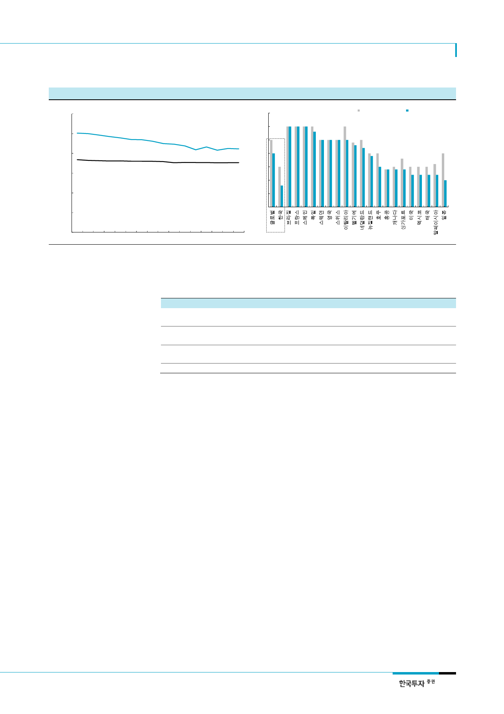

대한항공(003490)
[그림 7] 새정부는 근로시간을 연 1,800시간으로 현재보다 15% 낮출 방침
(시간/년)
3,000
2,500
우리나라 연간 근로시간은 2015년
2,113시간으로 꾸준히 줄고 있으나
여전히 OECD 평균보다 20% 많은 수준
2,000
1,500
OECD 평균 연간 근로시간
1,000
500
[그림 8] 우리나라는 휴가지급일(15일)이 적은데 사용율(53%)도 가장 낮음
(일/년)
35
휴가지급일수
실제사용일수
30
25
20
15
10
5
0
0
00 01 02 03 04 05 06 07 08 09 10 11 12 13 14 15
자료: OECD, 한국투자증권
주: 익스피디아 2016년 유급휴가 사용실태 조사 기준(28개국 9,424명 대상).
고용노동부의 2014년 연구에서도 우리나라 근로자에게 휴가는 연간 14.7일 주어
지나 실제 사용일수는 8.5일(58%)에 불과한 것으로 조사됨
자료: 익스피디아, 한국투자증권
<표 3> 새정부의 국민 휴식권 보장 공약
주요 공약
공휴일 적용대상 확대
대체공휴일 확대
임시공휴일 확대
근로자의 휴가권 보장
세부 내용
현행 공휴일은 관공서에 한하여 적용되기 때문에 일반 기업에게 강제하기 위한 법적
근거가 미흡. 공휴일을 모든 국민에게 적용하기 위해 법률로 명시화
대체 휴일제의 적용대상을 현행 명절과 어린이날에서 모든 공휴일로 확대
일부 공휴일을 요일제 공휴일로 전환 검토
공휴일 사이의 샌드위치 데이에 대해 임시공휴일 선포 적극 추진
올해 추석연휴 기간 중 10 월 2 일 임시공휴일 지정 약속
연차유급휴가 2 주 기간 내 연속의무사용 가능하도록 제도 개선
자료: 문재인 대통령 정책공약집, 한국투자증권
외형경쟁보다 중요한 운임
17F 국제선 여객운임 반등
화물경기 개선은 플러스알파
17F 화물운임 +3.5% YoY
2. 운임 반등으로 수익성 향상
대한항공은 LCC와의 무리한 경쟁보다는 FSC로서의 강점이 뚜렷한 장거리노선에 주력하
고 있다. 근거리노선의 저가 수요에 대응하기보다는 탑승률을 높여 기재 운영의 효율성을
향상시키는 한편 M/S가 30%를 넘는 장거리노선 위주로 운임 제값 받기에 힘쓸 것이다.
2017년 제주항공과 진에어의 국제선 공급은 각각 20~30% 내외 증가하는 반면 대한항공
은 1.5% 늘어나는데 머물 것이다. 대한항공은 이례적으로 국내선 탑승률이 국제선보다 낮
은데, 올해는 130석 규모의 소형 여객기인 CS300을 교체 투입해 불필요한 좌석을 줄일
계획이다. 좌석 추가는 안정적 수요가 증명된 미국 서부와 유럽 일부 도시에 증편하는 선
에 그칠 것이다. 이에 따라 올해 국제선 평균운임은 5년 만에 반등할 것이다.
글로벌 IT 수요 강세가 이어지면서 1분기 화물 원화운임이 전년동기대비 5.7% 상승했다.
경기회복과 4차 산업혁명과 맞물려 반도체, 디스플레이 등 고수익 화물 수요가 꾸준히 늘
어날 것이다. 2010년대 이후 주요 항공사들이 화물수송 사업 규모를 줄여왔기 때문에 공
급경쟁 강도는 제한적이다. 2010년 대한항공의 전체 매출에서 30% 이상을 차지했던 화물
부문은 글로벌 경기 둔화로 비중이 2016년 21%로 낮아졌다. 대신에 대한항공은 불필요한
화물공급을 줄이는 한편 고수익 상품군을 중심으로 경쟁력을 강화해 왔다. 작년 4분기부
터 화물수요 회복이 뒷받침되고 있어 올해 운임은 전년동기대비 3.5% 상승할 전망이다.
5